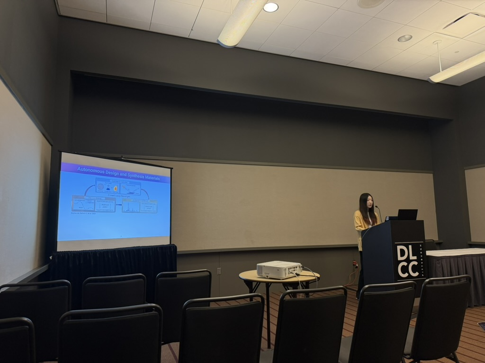
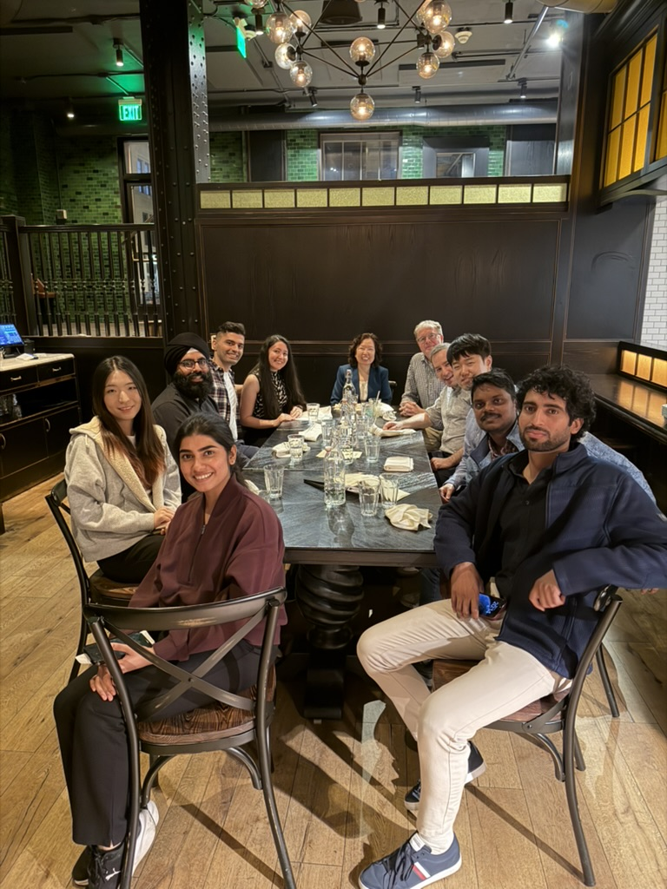

Dr. Wang gave two invited talks at the MS&T conference on continual deep learning and automated machine-learning workflows for improving ReaxFF development. The talks highlighted how adaptive learning and automated computational workflows can accelerate materials modeling and the development of reliable interatomic potentials.

